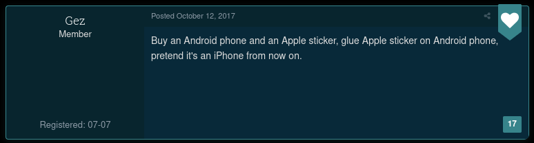

Installing on iOS
You can't. Sorry.
As explained by Graf Zahl, because of App Store policies, there is no official or even unofficial GZDoom port available for iOS or iPadOS.
So you can't play Sonic: Lock & Load on an iPhone or an iPad.
Maybe one day, someone will make a fully-functional up-to-date iOS variant of GZDoom, but today isn't one of those days.
Regardless, here's not-very-useful-at-all instructions on how to do it yourself.
Requirements
WARNING!! WARNING WARNING WARNING: These instructions are not verified even slightly. What follows may or may not be a good idea and isn't even complete like at all.
- GZDoom's source code
- A Mac (you need a Mac for any iOS development)
- CMake
- Xcode
- A paid Apple Developer account
- Willpower
- Foolishness
Okay so you just build the source code inside of Xcode using CMake or however the hell it works.
I dunno, I'm not an iOS developer.
You also probably need to include somewhere to put the IWADs as well as the Sonic: Lock & Load PK3.
And that's it(!)
Once you build it by some act of God, congratulations, now you can not put it on the App Store, because, again, Apple's guidelines.
I'm sorry if you thought these instructions would be legitimate.